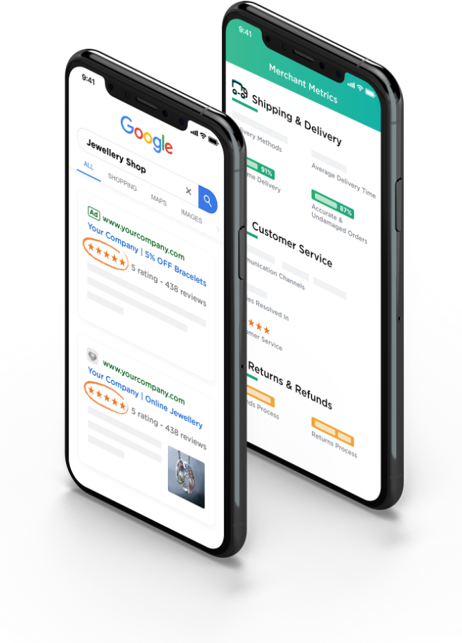
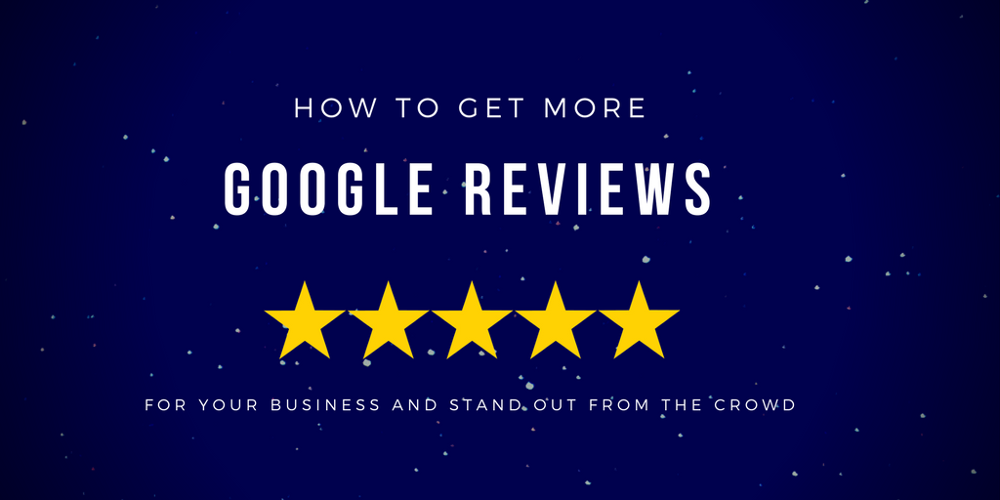

why choose us
Research has shown that 85% of people that use Google to find businesses will visit the business with the best reviews and the most stars. Research additionally shows that when given two options, a business with 4.6 stars and 300 reviews, and a business with 3.9 stars and 250 reviews, they are 92% more likely to visit the business with more stars.

Our Services
The web is full of opinions, and some of these can be negative. Social media allows anyone with an internet connection to say whatever they want about your business. Online Reputation Management gives you the control over what potential customers see when they search for your business.


About Us
Online reviews are powerful influencers. If your business has an online presence, an essential component of its valuable reputation will be online reviews. In fact, positive online reviews have more impact on your customers’ purchases than professionally curated content does. Online reviews are powerful external variables that you need to manage to generate traffic to your business and turn leads into customers.